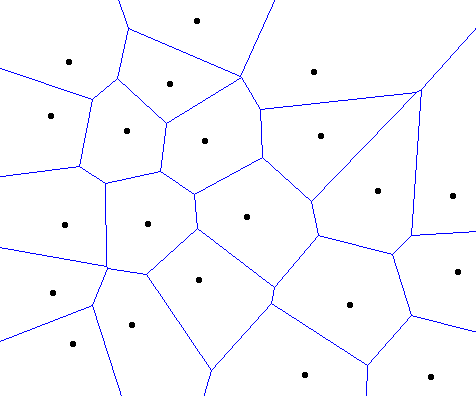
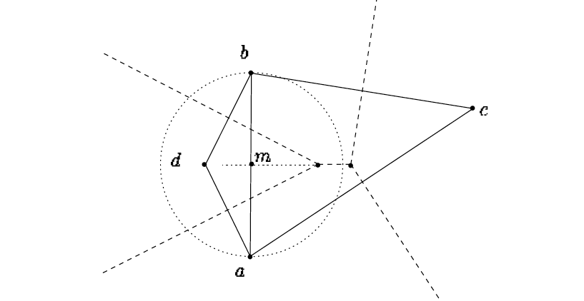
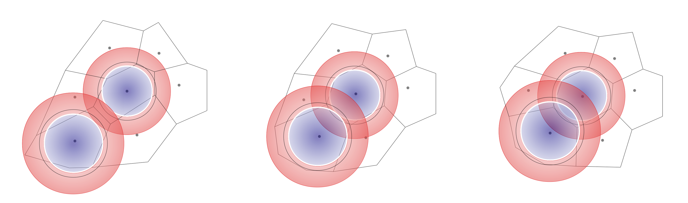
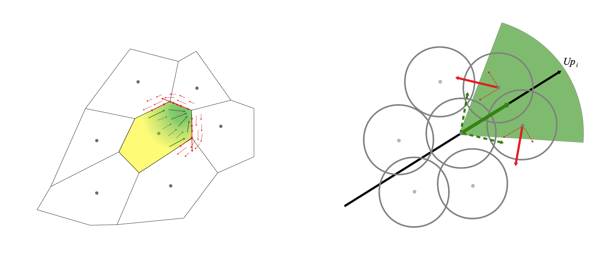
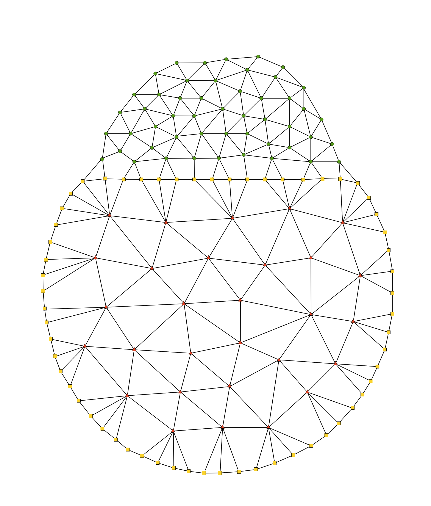

<figure id='homonculi_Hartsoecker_1695'>
	
	<figcaption>Drawing of the homonculi observed in sperm by Nicolaas Hartsoecker (1695)</figcaption>
</figure>
<figure id='Development_Review_dog_segmentation_kolliker_1861'>
	
	<figcaption>Egg segmentation from a dog's oviduct, surrounded by the zona pellucida and spermatozoa as represented by Albert Kölliker in 1861 <a name='Kolliker:1861uj' class='ref'></a>.</figcaption>
</figure>
<figure id='Development_Review_waddington_epigenetic_nature_mod_small_intro'>
	
	<figcaption><strong>Waddington's epigenetic landscape.</strong> A: The ball represents a cell evolving in the epigenetic landscape. Its fate is determined by the canals in which the ball is rolling. B: A view of the landscape's behind the scene. The landscape relief is dynamically controlled by hidden wires that symbolize genes' expression and interactions. Image and caption adapted from Slack <a name='Slack:2002kg' class='ref'></a></figcaption>.
</figure>
<figure id='experimental_science_schematic'>
	
	<figcaption><strong>The observation-hypothesis-experiment loop of experimental science. </strong> It involves two main actors: the individual and reality (environment); and three main processes: perception, hypothesis generation (modeling), and experimentation.</figcaption>
</figure>
<figure id='experimental_science_schematic_communauty'>
	
	<figcaption><strong>The collective effort of experimental science.</strong> Each member of the scientific community may send or receive scientific work, which are verbal or written descriptions of parts or the whole observation-hypothesis-experiment loop.</figcaption>
</figure>
<figure id='experimental_science_perception_augmented'>
	
	<figcaption><strong>Augmented perception with interfacing tool (optical microscope) and a reconstruction workflow.</strong></figcaption>
</figure>
<figure id='schema_raw_reconstructed_embryo_macroscopic'>
	
	<figcaption><strong>The three major steps of the reconstruction in the BioEmergences platform: raw data, reconstructed embryo and macroscopic measures. </strong> Left: raw data of the zebrafish developing head (nuclei labeled in green and cell membrane in red). Center: visualization of the reconstructed embryo with the MoveIt software. Small dots are the cell centers and arrows gives the future cell displacement. Colors indicates the velocities of the cell. The central image illustrates the extremely high dimensionality of the reconstructed embryo. Right: Macroscopic measures of the displacement field in the developing embryo (from B. Lombardot PhD manuscript <a name='Lombardot:2010vd' class='ref'></a>. Images realized by the BioEmergences team.</figcaption>
</figure>
<figure id='experimental_science_multi_initialstate'>
	
	<figcaption>Simple illustration of a dynamical system: if a ball is hit by an object, it will move in space following a parabolic curve until it lands on the ground. A classical mechanics model would consider the curve (i.e. the temporal evolution of the position) as the "phenotype", which is determined only from an initial known position and the velocity of the ball. Left: parameter space, Right: phenotypic space.</figcaption>
</figure>
<figure id='experimental_science_hypotheses_augmented'>
	
	<figcaption><strong>Augmentation of hypothesis generation through theoretical model and computer simulation.</strong></figcaption>
</figure>
<figure id='experimental_science_larger_augmented'>
	
	<figcaption><strong>Integrative schematic of the tool-augmented observation-hypothesis-experiment loop.</strong></figcaption>
</figure>
<figure id='experimental_science_phase_diagram2'>
	
	<figcaption><strong> Generic evaluation of the performance of a model through quantitative evaluation of its parameter space.</strong> To each element of the parameter space (left column), a deterministic dynamical system model associates a trajectory that may be represented by a single point in the extensive microscopic measurement space (this is the state space but we want to emphasize the complexity and the high dimensionality of this space when the model is agent-based, center column). The macroscopic measurement point are obtained by reconstructing and measuring the observations of interest in the complex trajectory space. Row 1 illustrates the passage from the parameter space to the extensive microscopic measurement space (red arrows). As shown by the arrow pointing to the white dot, there is no guaranty that every point in the parameter space produces a &quot;viable&quot; trajectory. Quantitative assessment of the performance of the trajectory are determined according to adapted criteria (comparison with a target measure Fig. <a name='experimental_science_phase_diagram_distance' class='fig'></a>, clustering). A &quot;color&quot; is attributed to the macroscopic measure points to symbolize this evaluation (Row 2). The color is easily propagated back to the parameter space and allows a quantitative assessment of the performance of every trajectory (Row 3, 4, 5). White regions represent parts of the parameter space that are not viable (Row 5).</figcaption>
</figure>
<figure id='experimental_science_phase_diagram_distance'>
	
	<figcaption><strong>Fitness landscape according to a target macroscopic measure.</strong> This schema is a particular example illustrating the case of a model evaluated by the comparison a macroscopic measure (black cross). The score of each trajectory is attributed as a function of the distance between the simulated macroscopic measures and the target macroscopic measure.</figcaption>
</figure>
<figure id='experimental_science_experimental_science_cleaner'>
	
	<figcaption><strong>Summary of the methodological workflow adopted for this project.</strong> The top left \(\Delta\) symbolizes the theoretical fitness (TF) and the top right \(\Delta\) the experimental reconstruction fitness (ERF).</figcaption>
</figure>
<figure id='biomechanics_sota_jacobson1976'>
	
	<figcaption><strong>One of the earliest computer simulations of spatial transformation during vertebrate development (Jacobson and Gordon, 1976).</strong> &quot;A. Appearance of the neural plate immediately after isolation without notochord at stage 13. B. Shape attained in the same explant when controls had reached mid-neurula stage 15. C. Results of a computer simulation using shrinkage alone, which would be compared to B&quot;. Images and caption from <a name='Jacobson:1976cc' class='ref'></a>.</figcaption>
</figure>
<figure id='biomechanics_sota_young_1984'>
	
	<figcaption><strong>Patterns produced with the activator-inhibitor model.</strong> As inhibition is decreased (left to right), the spot pattern connects up into a pattern of stripes. Images and caption from Young, 1984 <a name='Young:1984hd' class='ref'></a>.</figcaption>
</figure>
<figure id='gradient_tabata_2004'>
	
	<figcaption><strong>Models for morphogen transport.</strong> (A) A model for cytonemes. Cells at the periphery of the imaginal disc extend long processes, cytonemes, towards the AP border, where Dpp is expressed (light blue). (B) A model for argosomes. The basolateral membranes of imaginal disc cells vesiculate and travel throughout the disc epithelium. Image and caption from Tabata and Takei (2004) <a name='Tabata:2004bp' class='ref'></a></figcaption> 
</figure>
<figure id='gradient_ben_zvi_2011'>
	
	<figcaption><strong>Scaling of morphogen gradients.</strong> (d) The ratio (blue) between two gradients emanating from opposing edges of the field (green and red) can provide scaling of a signaling gradient. Left panel: wild type field; right panel: larger field. Image and caption excerpt from <a name='BenZvi:2011ky' class='ref'></a></figcaption> 
</figure>
<figure id='biomechanics_sota_epithelium'>
	
	<figcaption><strong>Selected illustrations from the literature of epithelial cell shaping and division patterns.</strong> A: Comparison of the distributions of polygonal epithelial cells obtained from simulation (yellow), the <i>Drosophila</i> wing disc (pink), the <i>Xenopus</i> tail epidermis (green) and the <i>Hydra</i> epidermis (blue) <a name='Gibson:2006gia' class='ref'></a>. B: Schematized Markov chain model expressing the proliferation dynamics of polygonal cells and used in the simulation of A <a name='Gibson:2006gia' class='ref'></a>. C: Typical cell division event in a vertex-based model <a name='Farhadifar:2007vj' class='ref'></a>.</figcaption>
</figure>
<figure id='leveloforganization_circle'>
	
	<figcaption>Biology is studied at many levels of organization.</figcaption>
</figure>
<figure id='leveloforganization_micro_macro'>
	
	<figcaption><strong>The hierarchy of level of organization of physical matter.</strong> At each level of organization, entities are <i>complex systems</i> composed of a great number of small, repeated elements. A: Level view. B: Integrated view.</figcaption>
</figure>
<figure id='theoretical_model_review1'>
	
	<figcaption><strong>Summary table of the developmental models and principles reviewed in Section 2.</strong> (Part I)</figcaption>
</figure>
<figure id='theoretical_model_review2'>
	
	<figcaption><strong>Summary table of the developmental models and principles reviewed in Section 2.</strong> (Part II)</figcaption>
</figure>
<figure id='schematic_mecagen'>
	
	<figcaption><strong>General diagram of the MECAGEN project.</strong> a: Biomechanical processes, including a &quot;passive&quot; and &quot;active&quot; forces (see summary of Chapter 3 above). b: Molecular/genetic regulation and signaling processes, including gene regulation networks, intracellular protein concentrations, extracellular ligands secretion, diffusion and binding.</figcaption>
</figure>
<figure id='experimental_science_experimental_science_cleaner_focus_theo'>
	
	<figcaption><strong>Situation of Chapter 3 in the methodological workflow.</strong></figcaption>
</figure>
<figure id='biomechanics_sota_general_type_of_models'>
	
	<figcaption>The schematic categorization of the models adopted in this review.</figcaption>
</figure>
<figure id='solids_1000px-Stress_in_a_continuum.png'>
	
	
	<figcaption>Left. Stress from a loaded deformable material body assumed as a continuum from http://en.wikipedia.org/wiki/Stress_(mechanics)#Cauchy_stress_tensor. Right. Plane strain state in a continuum from http://en.wikipedia.org/wiki/Plane_strain#Plane_strain
 </figcaption>
</figure>
<figure id='CPM_onlattice_potts.png'>
	
	<figcaption>Cellular Potts Model on-lattice space.</figcaption>
</figure>
<figure id='MECAGEN_selfassembly3D'>
	
	<figcaption><strong>One of our early experiments of single-particle cell models exploring the biomechanics of the MECAGEN project.</strong> Each cell is represented by a small sphere and interacts with its nearest neighbors in a Delaunay tessellation through elastic forces (see Section 3.2).</figcaption>
</figure>
<figure id='beforeMECAGEN_selfassembly3D'>
	<video src="../../videos/video_modeling/beforeMECAGEN/selfassembly3D.ogg" width="800" controls></video>
	<figcaption><strong>Video of single-particle cell division.</strong> This corresponds to Fig. <a name='MECAGEN_selfassembly3D' class='fig'></a>.</figcaption>
</figure>
<figure id='MECAGEN_multi_two_models'>
	
	<figcaption><strong>Two of our early experiments of multiparticle cell models exploring the biomechanics of the MECAGEN project.</strong> Left: Each cell is a sac filled with a great number of subcellular elements, appearing as vertices of a triangular mesh on the cell membrane. Green edges schematize intercellular adhesion forces (Movie <a name='beforeMECAGEN_MemInECMmitosis' class='fig'></a>). Right: Similar experiment with simpler empty polyhedric cells.</figcaption>
</figure>
<figure id='beforeMECAGEN_MemInECMmitosis'>
	<video src="../../videos/video_modeling/beforeMECAGEN/MemInECMmitosis.ogg" width="800" controls></video>
	<figcaption><strong>Video of multiparticle cell division and growth.</strong> This corresponds to Fig. <a name='MECAGEN_multi_two_models' class='fig'></a>, Left.</figcaption>
</figure>
<figure id='sandersius_newman_4_images'>
	
	<figcaption><strong>Illustrations of the Subcellular Element Model (ScEM).</strong> Top left: Schematic diagram showing two cells, \(i\) and \(j\), and a subset of the intra- (solid lines) and intercellular (dashed lines) interactions between their sub-elements (open circles in \(i\), filled circles in \(j\)). Image and caption adapted from <a name='Newman:2005ux' class='ref'></a>. Top Right: Visualization of two interacting cells simulated using the ScEM and comprising about 500 elements each. Image and caption from <a name='Sandersius:2011ih' class='ref'></a>. Bottom left: Visualization of an ScEM simulation of a single cell being stretched by a constant unilateral applied force. Image and caption from <a name='Sandersius:2011ih' class='ref'></a>. Bottom right: A spherical cluster of about 110 cells with about 370 elements per cell. Image and caption from <a name='Sandersius:2008ia' class='ref'></a>. </figcaption>
</figure>
<figure id='spatial_neighb_field_volume_ratio'>
	
	<figcaption><strong>Ratio of the physical volume of a particle over the volume of its local interaction field.</strong> Atoms and planet have an interaction range that is much larger that their physical envelope whereas cells can only mechanically interact by physically touching their neighbors.</figcaption>
</figure>
<figure id='spatial_neighb_voronoi'>
	
	<figcaption>2D Voronoi diagram generated with the <a href="http://www.liefke.com/hartmut/cis677/">Voronoi sweeping algorithm applet</a> by H. Liefke.</figcaption>
</figure>
<figure id='spatial_neighb_Delaunay_circumcircles_centers'>
	
	<figcaption><strong>A Delaunay triangulation in the 2D plane.</strong> Black dots are the particles, black lines their Delaunay neighborhood links, and red dots the circumcircles' centers. No circumcircle contains a particle in its interior. Image from <a href="http://en.wikipedia.org/wiki/Delaunay_triangulation">http://en.wikipedia.org/wiki/Delaunay_triangulation</a></figcaption>
</figure>
<figure id='Contact_mechanics_two_cells_contact'>
	
	<figcaption><strong>Typical profile of the contact radius as a function of the particles' distance in contact mechanics (with adhesion).</strong> In abscissa: distance between the particles; in ordinate: contact radius. As the adhesive energy increases or the elastic modulii decrease, the equilibrium contact surface area tends toward the upper left part of the curve. </figcaption>
</figure>
<figure id='Contact_mechanics_multi_cells_contact'>
	
	<figcaption><strong>Multicellular limits of contact mechanics.</strong> As the adhesion energy increases, the contact surface areas become larger and the volume of the central cell is not conserved (bottom right). Contact mechanics does not deal well with multiple surfaces of contact when &quot;triple junction points&quot; appear (from top right to bottom). </figcaption>
</figure>
<figure id='spatial_neighb_spherecontact_edge_surf_link_figure'>
	
	<figcaption>Output of the neighborhood algorithm. Left: A 2D swarm of cells characterized by various given positions and radii. Right: The neighborhood links (black edges) and contact surface areas (red edges) between cells calculated by the method described in this section.</figcaption>
</figure>
<figure id='spatial_neighb_surface_distance_why_all_figure'>
	
	<figcaption><strong>Schema of the particle-cell and its maximum distance of deformation. </strong> The smaller circle gives the radius of the spherical cell and the larger circle gives the maximum distance of deformation. </figcaption>
</figure>
<figure id='spatial_neighb_Fusion_light'>
	
	<figcaption><strong>Estimation of the contact surface area in a weighted Delaunay/Voronoi simulation.</strong> An ellipsoid filled with 300 cells is artificially deformed (stretched and compressed) to generate various distance-surface measurement pairs. Blue cells indicate local compression (i.e. weighted Voronoi volume less than theoretical volume), red cells indicate local dilation.</figcaption>
</figure>
<figure id='potential_surf_dist_movie_1677cells_gS11_filtered'>
	<video src="../../videos/MECAGEN/potential/surf_dist_movie_1677cells_gS11_filtered.ogg" width="800" controls></video>
	<figcaption> <strong>Estimation of the contact surface area in a weighted Delaunay/Voronoi simulation.</strong> An ellipsoid filled with 300 cells is artificially deformed (stretched and compressed) to generate various distance-surface measurement pairs. Blue cells indicate local compression (i.e. weighted Voronoi volume less than theoretical volume), red cells indicate local dilation.</figcaption>
</figure>
<figure id='spatial_neighb_g10_g11_exp9_simple'>
	
	<figcaption><strong>Scatter plot of the contact surface area between neighboring Voronoi domains as a function of the distance between their centers.</strong> Each dot is a surface-distance pair of values obtained from two neighbors according to the weighted Voronoi algorithm. The color map reflects the density in plot space (white for highest density). The central yellow curve is the regression of the distribution (segmented curve calculated at discrete distance intervals).</figcaption>
</figure>
<figure id='spatial_neighb_zoomALL'>
	
	<figcaption><strong>Heat map of the sum of squared errors of prediction (SSE) for various pairs of parameters \((a,c_{\mathrm{max}})\).</strong> Blue regions indicate the best fitness domains, with point \((a=1.3697 , c_{\mathrm{max}}=1.2414)\) representing the absolute best fit. In abscissa: \(c_{\mathrm{max}}\); in ordinate: \(a\); in color: \(\log(\log(\mathrm{SSE}))\) to accentuate the contrast.</figcaption>
</figure>
<figure id='spatial_neighb_multi_scatter_gp1_gp2_exp9_14'>
	
	<figcaption><strong>Comparison of the best fit with measures from various experiments. </strong> </figcaption>
</figure>
<figure id='spatial_neighb_gabriel'>
	
	<figcaption>An example of Gabriel graph on four nodes K, L, M and N. Only edges KL, LM and MN are valid because the disks whose diameters are these edges do not contain any other node (whereas, for example, the disk based on LN contains node M).</figcaption>
</figure>
<figure id='spatial_neighb_gabdelau'>
	
	<figcaption>A 2D Gabriel graph is a subset of a Delaunay triangulation. Here, 5 solid lines represent the Delaunay edges. The Gabriel graph has only 4 of them because it excludes edge \(ab\). Visually, a Delaunay edge is also a Gabriel edge if it intersects the contact border (dashed lines) between the two cell domains (schema from <a name='Cazals:2004wc' class='ref'></a>)</figcaption>
</figure>
<figure id='spatial_neighb_hexagonal_compact'>
	
	<figcaption><strong>Perfect hexagonal lattice.</strong> In the 2D plane, the hexagonal lattice configuration realizes the densest packing of disks. </figcaption>
</figure>
<figure id='spatial_neighb_hexagonal_compact3D'>
	
	<figcaption><strong>Hexagonal close packing in 3D. </strong></figcaption>
</figure>
<figure id='potential_trapezo_all_figure'>
	
	<figcaption>Trapezo-rhombic dodecahedra (TRD) constitute the Voronoi domains of a maximally compact 3D packing of equally sized solid spheres.</figcaption>
</figure>
<figure id='potential_apf_sphere_figure'>
	 
	<figcaption>The green sphere has the same volume as the trapezo-rhombic dodecahedron. The orange sphere has a radius \(c_{\mathrm{eq}}R_i\) tangential to each face of the TRD.</figcaption>
</figure>
<figure id='potential_surface_distance_why_potential'>
	
	<figcaption><strong>Schema of the particle-cell, its equilibrium distance and its maximum distance of deformation. </strong> </figcaption>
</figure>
<figure id='potential_surface_distance_why_potential_rep_eq_adh'>
	
	<figcaption><strong>Neighbor particle-cells in attraction (left), equilibrium (middle) and repulsion (right) configuration.</strong></figcaption>
</figure>
<figure id='potential_potential_linear_force'>
	
	<figcaption><strong>Plot of the linear spring-like force \(\vec{F}^{P,\mathrm{lin}}\).</strong> The repulsion coefficient \(w_{\mathrm{rep}}\) is fixed, while the adhesion coefficient \(w_{\mathrm{adh}}\) can vary.</strong> Here, the equilibrium distance is \(r^{\mathrm{eq}} = 1\).</figcaption>
</figure>
<figure id='potential_potential_surface'>
	
	<figcaption><strong>Contact surface area \(A_{ij}\) as a function of intercellular distance \(r_{ij}\).</strong> Here, the sum of \(R_i\) and \(R_j\) is \(1\).</figcaption>
</figure>
<figure id='potential_potential_linear_force_scale'>
	
	<figcaption><strong>Plot of the relaxation force \(\vec{F}^P\) with variable adhesion coefficient \(w_{\mathrm{adh}}\).</strong> </figcaption>
</figure>
<figure id='potential_potential_superpose'>
	
	<figcaption><strong>Comparison of the relaxation force used in MECAGEN with various classical attraction-repulsion forces.</strong> (See legend inset.)</figcaption>
</figure>
<figure id='protrusion_multicell_white_rec_figure'>
	
	<figcaption><strong>Cellular protrusion illustrated at the subcellular level.</strong> The cell cytoskeleton is in blue, the cell membrane in grey, the thin orange edges are the regular adhesion bridges and the thick red edges are focal adhesion points, related to the protrusion. The gradient of color in the cell interior reflects the polarization axis. New focal adhesion points appear at the tip of the cell, move back, then disappear as the cell moves forward.</figcaption>
</figure>
<figure id='protrusion_protrusion_schematic_figure'>
	
	<figcaption><strong>Idealized representation of the protrusive activity in MECAGEN.</strong> Left: green arrows represent the cell interior flow and red arrows the cell neighborhood flow, as the central cell exert a protrusion on its surroundings. Right: transcription of the previous mechanism in the particle-based framework. Two neighbor cells belong to the polar domain (green wedge), i.e. \(\mathcal{N}^{t+}_i\) with respect to the central cell \(i\) that exerts a protrusive force \(\vec{F}^A_i\) on them. The active forces are shown in red and the reaction in dashed green arrows. The resulting force applied on \(i\) leads it to move along the side of its neighbors and pass through.</figcaption>
</figure>
<figure id='experimental_science_experimental_science_cleaner_focus_theo_2'>
	
	<figcaption><strong>Situation of Chapter 4 in the methodological workflow.</strong></figcaption>
</figure>
<figure id='model_grns_zebra_grn_yuh'>
	
	<figcaption><strong>Example of BioTapestry representation of a developmental gene regulatory network (GRN) in the zebrafish.</strong> Figure from Chan et al. (2009) <a name='Chan:2009er' class='ref'></a>.</figcaption>
</figure>
<figure id='Case_theo_grn_generic_grn_cell_shape'>
	
	<figcaption><strong>Example of abstract gene regulatory network (GRN) produced for this study using the BioTapestry software.</strong> This GRN illustrates the typical molecular/genetic regulation and signaling components used in MECAGEN: protein-protein interactions ("PPI"), genes and their cis-regulatory elements ("Gene X"), signal secretion module ("Secretor X"), signal transduction module ("Receptor X"). The solid arrows in the cell interior represent intracellular proteins; the dashed arrows outside the cell membrane represent extracellular ligands. Practically, the topology and parameters of the GRN are all specified by the user of BioTapestry, then an XML file is saved and can serve as an input into the model.</figcaption>
</figure>
<figure id='model_grns_diffusion_schematic'>
	
	<figcaption><strong>Schema of the flux of ligand.</strong> Here, \(\vec{J}\) represents \(\vec{J}_{a,ij} = \vec{J}_{a,ji}\), the flux of ligand \(Q_a\) between the cellular volumes occupied by neighboring particles \(i\) and \(j\).</strong></figcaption>
</figure>
<figure id='double_negative_gate_dng_grn'>
	
	<figcaption><strong>"Double negative gate" GRN subcircuit.</strong> We generated this network map with the BioTapestry software from the input file of our experimental model.</figcaption>
</figure>
<figure id='double_negative_gate_dng_grn_plot2'>
	
	<figcaption><strong>Evolution of the proteins concentration in the region where X is expressed.</strong> See text for the explanation of the curves' profile. The tagged vertical bars A, B, C, and D indicate the timing of the snapshots shown in Fig. <a name='double_negative_gate_double_negative_gate_spatial' class='fig'></a>. The curve of Target1 (pink) is hidden by the curve of Target2 (blue) as their dynamics is exactly the same.</figcaption>
</figure>
<figure id='double_negative_gate_double_negative_gate_spatial'>
	
	<figcaption><strong>Spatial evolution of the protein concentration in the double negative gate experiment.</strong> The letters correspond to the bars of Fig. <a name='double_negative_gate_dng_grn_plot2' class='fig'></a>. Each image is composed of 6 simultaneous views of the simulated cell population. Colors represent protein types and shades represent their concentrations (dark for low, bright for high). The top left corner of each image is the region where protein X is artificially secreted.</figcaption>
</figure>
<figure id='MECAGEN_Case_theo_grn_dng_x4'>
	<video src="../../videos/MECAGEN/Case_theo_grn/dng_x4.ogg" width="800" controls></video>
	<figcaption><strong>Real-time representation of the simulation in the double negative gate experiment.</strong> Each image is composed of 6 simultaneous views of the same simulated cell population. Colors represent protein types and shades represent their concentrations (dark for low, bright for high).</figcaption>
</figure>
<figure id='experimental_science_experimental_science_cleaner_focus_theo_3'>
	
	<figcaption><strong>Situation of Chapter 5 in the methodological workflow.</strong></figcaption>
</figure>
<figure id='Development_Review_waddington_epigenetic_nature_mod_small'>
	
	<figcaption><strong>Waddington's epigenetic landscape.</strong> A: The ball represents a cell evolving in the epigenetic landscape. Its fate is determined by the canals in which the ball is rolling. B: A view of the landscape's behind the scene. The landscape relief is dynamically controlled by hidden wires which symbolized the gene expression and interactions. Image and caption adapted from Slack <a name='Slack:2002kg' class='ref'></a></figcaption>
</figure>
<figure id='waddingtonian_timeline_timeline'>
	
	<figcaption><strong>Waddingtonian timeline.</strong> The grey bar on top is the time axis, starting from the left to the right. The thin white bar is the current time step of a simulation. Thick red bars symbolize buckets from which the whole state of a simulation is recorded as the white time bar passes through it. It is a convenient way of specifying simulation snapshots. The colored bifurcating branches are the cell type that the cells can potentially take. The dots are the stages from which the simulation parameters are specified. A stage comprise all the vertical dots at a given time step, thus we can observe 5 stages in the timeline.</figcaption>
</figure>
<figure id='waddingtonian_timeline_sources_sinks'>
	
	<figcaption><strong>Ligands cells' sources and sinks specification.</strong> Left: </figcaption>
</figure>
<figure id='waddingtonian_timeline_adhesion'>
	
	<figcaption><strong>Adhesion coefficient in the Waddingtonian timeline gui.</strong> The matrix must be symmetrical so only half of the coefficients are displayed. Cell types' color code is the same as Fig. <a name='waddingtonian_timeline_timeline' class='fig'></a>.</figcaption>
</figure>
<figure id='waddingtonian_timeline_protrusion'>
	
	<figcaption><strong>Protrusion module in the Waddingtonian timeline specification.</strong> Three cell types are involved here: red, green and blue. In each cell type's rounded rectangle, the protrusion module is represented by four rectangles with: top left, the target cell type, top right, the polarization axis id, bottom left, the intensity of the protruding force, and bottom right, the type of protrusion, either monopolar or bipolar.</figcaption>
</figure>
<figure id='Case_theo_sorting_nosource_allmigr_DAH_image'>
	
	<figcaption><strong>Cell sorting experiment: random axes, differential adhesion case.</strong> The homotypic adhesion coefficient (\(w_{\mathrm{adh}} = 5\)) is higher than the heterotic coefficient (\(w_{\mathrm{adh}} = 1\)). All cells have bipolar protrusive activities with random polarization axes (mode (d) in Section 5.1). The rate of cluster size growth is decreasing over time. The time is provided through the number of simulation time steps.</figcaption>
</figure>
<figure id='Case_theo_sorting_nosource_allmigr_DAH'>
	<video src="../../videos/MECAGEN/Case_theo/sorting_nosource_allmigr_DAH.ogg" width="800" controls></video>
	<figcaption><strong>Cell sorting experiment: random axes, differential adhesion case.</strong> The homotypic adhesion coefficient (\(w_{\mathrm{adh}} = 5\)) is higher than the heterotic coefficient (\(w_{\mathrm{adh}} = 1\)). All cells have bipolar protrusive activities with random polarization axes (mode (d) in Section 5.1). The rate of cluster size growth is decreasing over time.</figcaption>
</figure>
<figure id='Case_theo_sorting_sourceext_extmigr_image'>
	
	<figcaption><strong>Cell sorting experiment: heterotypic protrusion, parallel polarization axes case.</strong> Two hidden ligands are diffusing from the left and right border of the cellular bilayer. Green cells' polarization axes are oriented toward the right source and red cells' ones toward the left source (mode (a) in Section 5.1). For each cell types, cells are exerting monoplar protrusion on the other cell type only (heterotypic protrusion contacts). Heterotypic adhesion is weak (\(w_{\mathrm{adh}} = 0.1\)) compared to homotypic adhesion (\(w_{\mathrm{adh}} = 1\)). </figcaption>
</figure>
<figure id='Case_theo_sorting_sourceext_extmigr'>
	<video src="../../videos/MECAGEN/Case_theo/sorting_sourceext_extmigr.ogg" width="800" controls></video>
	<figcaption><strong>Cell sorting experiment: heterotypic protrusion, parallel polarization axes case.</strong> Two hidden ligands are diffusing from the left and right border of the cellular bilayer. Green cells' polarization axes are oriented toward the right source and red cells' ones toward the left source (mode (a) in Section 5.1). For each cell types, cells are exerting monoplar protrusion on the other cell type only (heterotypic protrusion contacts). Heterotypic adhesion is weak (\(w_{\mathrm{adh}} = 0.1\)) compared to homotypic adhesion (\(w_{\mathrm{adh}} = 1\)).</figcaption>
</figure>
<figure id='Case_theo_sorting_sourcecenter_extmigr_image'>
	
	<figcaption><strong>Cell sorting experiment: heterotypic protrusion, radial polarization axes case.</strong> A single ligand is diffusing from the center of the cellular bilayer. Red cells' polarization axes are oriented along the local increasing gradient, green cells' ones are oriented the local decreasing gradient (mode (a) in Section 5.1). For each cell types, cells are exerting monopolar protrusion on the other cell type only (heterotypic protrusion contacts). Heterotypic adhesion is weak (\(w_{\mathrm{adh}} = 0.1\)) compared to homotypic adhesion (\(w_{\mathrm{adh}} = 1\)).</figcaption>
</figure>
<figure id='Case_theo_sorting_sourcecenter_extmigr'>
	<video src="../../videos/MECAGEN/Case_theo/sorting_sourcecenter_extmigr.ogg" width="800" controls></video>
	<figcaption><strong>Cell sorting experiment: heterotypic protrusion, radial polarization axes case.</strong> A single ligand is diffusing from the center of the cellular bilayer. Red cells' polarization axes are oriented along the local increasing gradient, green cells' ones are oriented the local decreasing gradient (mode (a) in Section 5.1). For each cell types, cells are exerting monopolar protrusion on the other cell type only (heterotypic protrusion contacts). Heterotypic adhesion is weak (\(w_{\mathrm{adh}} = 0.1\)) compared to homotypic adhesion (\(w_{\mathrm{adh}} = 1\)).</figcaption>
</figure>
<figure id='Case_theo_individual_migration2'>
	
	<figcaption><strong>Cell migration experiment: individual migration. </strong> Left: Simulation involving a three cell population: a few cells secrete a ligand (the cells are not shown but the red color represents the ligand around cells whether its local quantity is larger than a given threshold), the green cells are exerting monopolar protrusion oriented along the positive local gradient of the gradient. The protrusions are effective on every other cell types. Transparent cells are inactive. Right: Germ cells (green) migrating toward cells expressing SDF-1a (red), which serves as a guidance cue. Images from the right column adapted from a movie available on the E. Raz Lab's website <a href="http://zmbe.uni-muenster.de/institutes/izb/izbres.htm">http://zmbe.uni-muenster.de/institutes/izb/izbres.htm</a></figcaption>
</figure>
 <figure id='Case_theo_migr_raz_simu'>
	<video src="../../videos/MECAGEN/migrRaz.ogg" width="800" controls></video>
	<figcaption>Cell migration experiment: individual migration. </strong> Simulation involving a three cell population: a few cells secrete a ligand (the cells are not shown but the red color represents the ligand around cells whether its local quantity is larger than a given threshold), the green cells are exerting monopolar protrusion oriented along the positive local gradient of the gradient. The protrusions are effective on every other cell types. Transparent cells are inactive. </figcaption>
</figure>
<figure id='Case_theo_migr_raz_live'>
	<video src="../../videos/video_modeling/migrationRaz/sdf.ogg" width="500" controls></video>
	<figcaption><strong>Cell migration experiment: individual migration. </strong> Germ cells (green) migrating toward cells expressing SDF-1a (red), which serves as a guidance cue. Movie available on the E. Raz Lab's website <a href="http://zmbe.uni-muenster.de/institutes/izb/izbres.htm">http://zmbe.uni-muenster.de/institutes/izb/izbres.htm</a></figcaption>
</figure>
<figure id='zebrafish_10h_review_kimmel_drawings_augmented'>
	
	<figcaption><strong>The zebrafish early developmental stages. </strong> Adapted from Kimmel <a name='Kimmel:1995kn' class='ref'></a>. From the 1-cell stage until the end of gastrulation, lateral views with animal pole to the top and dorsal side, identified by the shield stage, to the right. The enveloping layer (EVL) is in yellow. The deep cells (in blue) lead through gastrulation to the hypoblast (in purple) and the epiblast (in dark blue).  The whole spatio-temporal sequence is expected to last 10 hours at 28.5 degree celsius. <!-- Compléter XXXX selon instruction fichier nadine --></figcaption>
</figure>
<figure id='zebrafish_10h_review_krezel_1994'>
	
	<figcaption><strong>Schematic illustration of the changes in the organization of the cortical cytoplasm of the yolk cell in relation to other cell types in zebrafish embryo during epiboly in normal embryos.</strong> The organization of microtubule networks in the YSL and YCL observed in this study is indicated by thin lines. Only part of the blastoderm is shown to reveal the morphology of the yolk cell. The relative sizes of elements are not proportional. (A) The late blastula just before the onset of epiboly (sphere stage, 4.0 h). The blastoderm, composed of the internal deep cells and the superficial enveloping layer (EVL), is positioned atop of the syncytial yolk cell. The animal surface of the yolk cell underlying the blastoderm is flat. Most of the yolk syncytial nuclei (YSN) are in the external yolk syncytial layer (external YSL) vegetal to the blastoderm. The microtubules of the external YSL form a network. The organization of microtubules in the internal YSL at this stage of development is not known. The microtubules of the a nuclear yolk cytoplasmic layer (YCL) radiate from the organizing centers associated with the vegetal-most YSN and are aligned along the animal-vegetal axis. (B) 30 percent epiboly (4.7h). The blastoderm covers 30 percent of the yolk cell that bulged toward the animal pole taking on a dome shape. The external YSL has contracted and exhibits densely packed YSN and a dense network of microtubules. The external YSL is partially covered by the expanding vegetally blastoderm. (C) 50 percent epiboly (5.2h). The blastoderm arrives at 50 percent of the yolk cell latitude and covers almost completely the YSN which is also migrating vegetally and the YSL microtubule network. Only the YCL with its array of the animal-vegetal microtubules is visible vegetally to the blastoderm. (D) 60 percent epiboly (6.5h). Deep cells cover 60 percent of the yolk cell. The YSN nuclei are now visible in front of the blastoderm and lead the epibolic movement. The YSN are often stretched along the animal vegetal axis. The EVL rim is closer to the vegetal pole than the margin of deep cells. The YCL is diminished. Figure and caption from Solnica-Krezel and Driever (1994) <a name='SolnicaKrezel:1994wl' class='ref'></a> </figcaption>
</figure>
<figure id='zebrafish_10h_review_yuen_2012'>
	
	<figcaption><strong>Characterization of Ca(2+) signaling in the external yolk syncytial layer during the late blastula and early gastrula periods of zebrafish development. </strong> Timeline to show the major events that occur during: the appearance of the YSL; the division, distribution and movement of the E-YSN; the movement of the I-YSN; and the reported Ca2+ signals generated at or near to the blastoderm margin, during the blastula and early gastrula periods. New data regarding E-YSN clustering, changes in inter-nuclear distance in the E-YSL over time and the generation of E-YSL Ca2+ waves are also shown. MBT, midblastula transition; AP, animal pole; VP, vegetal pole. These features correlating events at different scales does not bring us closer however to an integrated model of zebrafish blastulation and gastrulation. But it indeed provides some hints in the ingredients that the model should take into account. Figure and caption from Yuen et al., 2012 <a name='Yuen:2012fr' class='ref'></a>
</figcaption>
</figure>
<figure id='experimental_science_experimental_science_cleaner_focus_reconstruction_live'>
	
	<figcaption><strong>Situation of Chapter 7 in the methodological workflow.</strong></figcaption>
</figure>
<figure id='bioemergences_c_elegans_lineage_kipreos_2005'>
	
	<figcaption>Cell lineage from the <i>Caenorhabditis elegans</i> embryonics and larval stages from Kipreos, E.T., 2005. C. elegans cell cycles: invariance and stem cell divisions. Nature reviews Molecular cell biology, 6(10), pp.766–776. <a name='Kipreos:2005im' class='ref'></a></figcaption>
</figure>
<figure id='bioemergences_FigureWorkflow_Workflow2'>
	
	<figcaption>Workflow of reconstruction of the cell lineage</figcaption>
</figure>
<figure id='bioemergences_FigureWorkflow_Workflow2_lineage_only'>
	
	<figcaption></figcaption>
</figure>
<figure id='segmentation_images_segmentation'>
	
	<figcaption>Top. Left. A triangle with subjective contour <a name='Sarti:2000jw' class='ref'></a>. Right. Evolution of the subjective surface technique towards the contour <a name='Sarti:2000jw' class='ref'></a>. Bottom. Segmentation of membrane with an uncomplete contour <a name='Zanella:2007vh' class='ref'></a>.</figcaption>
</figure>
 <figure id='these_lombardot_p93_texture_tensor'>
 	
 	<figcaption>Le tenseur de texture de la cellule i (jaune) peut ^etre vu comme une
caracterisation geometrique de la forme du voisinage de i (A). Le tenseur de texture
(vert) est proche de la covariance du voisinage de i (rouge) (B). Le tenseur de texture
peut aussi ^etre interprete comme la covariance du voisinage symetrise de i. adapted from XXXXXX</figcaption>
 </figure>
 <figure id='these_lombardot_p94_texture_tensor_average'>
 	
 	<figcaption>En general, le tenseur de texture n'est pas defini pour une cellule mais pour
une collection de cellules C (cellule dans le cercle jaune). Comme pour une representation
"coarse grained" du milieu le tenseur de texture a la position X est defini par la moyenne
des tenseurs de texture de chaque cellule de la region de mesure (cercle jaune) (a droite).
En representant tous les liens impliques dans la mesure du tenseur de texture au point X
(M(X)), on comprend bien que M(X) est une caracterisation moyenne de la forme des
voisinages cellulaires dans la region de mesure autour de X.</figcaption>
 </figure>
 <figure id='these_lombardot_p98_texture_tensor_derivative'>
 	
 	<figcaption>La derivee de M traduit la description intuitive de l'evolution du voisinage
d'une cellule. Le tenseur de texture de la cellule i (jaune) a t + dt est egale au tenseur
de texture de i a t (M(t)) auquel trois contributions sont ajoutees : la premiere traduit
la deformation continue des positions de cellules restant dans le voisinage de i (cellules
bleues), la seconde traduit l'entree de cellules dans le voisinage (cellules rouges), enfin la
derniere contribution correspond aux cellules sortant du voisinage (cellules vertes). Ces
trois contributions correspondent respectivement aux tenseurs B(t), n_ +M+ et n_ M.
Cette interpretation intuitive n'est valide que si le nombre de liens apparus est egal au
nombre de liens disparus.</figcaption>
 </figure>
 <figure id='these_lombardot_p166_velocity_map'>
 	
 	<figcaption>La figure montre l'evolution du champ de vitesse et de sa norme dans le jeu
de donnees 080322a. C'est une vue laterale. Le triedre rappelle l'orientation de la carte sur
chaque image : l'axe vert pointe le c^ote dorsal et l'axe rouge le p^ole animal. Sur la vignette
A les donnees sont representees sur le modele geometrique de l'embryon (sphere + repere).
L'echelle en bas a gauche de chaque vignette represente une longueur de 100m. Sur les
figures D, E et F on a superpose la topologie du champ de vitesse : point singulier (rouge),
separatrices (bleu), lignes de courant (vert). La vignette B ne presente pas de moyenne
spatiale du champ de deplacement. Les donnees sont presentees de l'interieur du vitellus.
On peut observer les cellules de l'hypoblaste lateral pres de la marge.</figcaption>
 </figure>
 <figure id='these_lombardot_p172_velocity_map_drawings'>
 	
 	<figcaption>Les champs de vitesse peuvent ^etre caracterises par une topologie simple.
Les vignettes presentent la topologie du systeme au cours du temps. Chaque schema
represente l'embryon en vue laterale par un cercle. Le c^ote dorsale est a droite, ventrale
a gauche, les p^oles animal et vegetatif respectivement en haut et en bas. Etant donnee
la symetrie bilaterale du systeme cette vue est susante pour caracteriser l'ensemble du
champ de vitesse. Les separatrices sont representees par des lignes rouges, les singularites
par des points rouges. On a trace quelques lignes de courant en vert pour illustrer la
coordination des mouvements de matiere associes a la topologie tracee.</figcaption>
 </figure>
 <figure id='these_lombardot_p180_deformation_rate'>
 	
 	<figcaption>La figure presente a 7,5 hpf les champs de directions propres associes
aux taux de deformation dans les tissus. Les valeurs propres vont croissantes de gauche
a droite. La carte de couleur indique le signe des valeurs propres et l'orientation des
directions propres par rapport au tissu (voir la figure 4.5). L'orientation des donnees est
rappelee par le repere (bleu, vert, rouge) : laterale (080322a), animale (071226a), dorsale
(070128c). Sur la vue laterale de la premiere valeur propre, la ligne pointillee marque la
separation entre les regions A et B definis dans la description. Les regions A, B, C, D, E
sont 
echees sur les dierentes vues associees a la premiere valeur propre lorsqu'elles sont
visibles.</figcaption>
 </figure>
 <figure id='these_lombardot_p200_neighbor_shape_U'>
 	
 	<figcaption>La figure montre l'evolution des cartes moyennes de la forme des voisinages
cellulaires en vue laterale. Ces cartes sont construites a partir du jeu de donnees 080322a.</figcaption>
 </figure>
 <figure id='these_lombardot_p205_lost_contact'>
 	
 	<figcaption>La figure montre en vue animale (071226a) des cartes de direction de
disparition des contacts (1ere valeur propre de P). Le repere indique l'orientation de
l'embryon : c^ote dorsal pointe par la 
eche verte, p^ole animal pointe par la 
eche rouge.
En premiere ligne on a une coupe presentant la carte dans le plan de symetrie bilaterale
de l'embryon. Sur la seconde ligne on a une vue du p^ole animal sur la carte.</figcaption>
 </figure>
 <figure id='these_lombardot_p209_new_contact'>
 	
 	<figcaption>Les cartes presentent la direction principale d'apparition des contacts (1ere
valeur propre du tenseur P+). Une partie de la regionalisation observee correle avec les
directions de contraction du champ de deformation mesoscopique (1ere valeur propre).</figcaption>
 </figure>
 <figure id='these_lombardot_p211_mix_tensor'>
 	
 	<figcaption>La figure montre l'evolution de la principale direction propre du tenseur de
melange dans une vue animale (071226a). C'est la direction dans laquelle les translations
de cellules vis-a-vis de leur voisinage sont les plus importantes en moyenne. La partie
superieure de chaque vignette montre une section de la carte dans le plan de symetrie
bilaterale de l'embryon. La partie inferieure de chaque vignette est une vue du p^ole animal.</figcaption>
 </figure>
 <figure id='these_lombardot_p237_deformation_rate_comparison_zoep'>
 	
 	<figcaption>La figure illustre les dierences macroscopiques observees dans le champ
de deformation continue des tissus en vue animale pour un embryon sauvage (WT) et
un mutant zoep. Le jeu de donnees WT est 071226a, celui du mutant zoep est 081018a.
La structuration du champ de deformation est dierente des 7,5 hpf. Apres 8,5 hpf il se
forme chez le WT une region avec des lignes de deformation paralleles au plan median
(region anterieure aux pointilles). Cette region de part et d'autre de laquelle se forment
les vesicules optiques n'existe pas chez le mutant zoep.</figcaption>
 </figure>
	<figure id='washington_workflow'>
		
		<figcaption><strong>Global diagram of the reconstruction workflow of the <i>in toto</i> deformation fields. </strong> </figcaption>
	</figure>
<figure id='washington_5angles_before'>
	
	<figcaption><strong>Original five views produced by the Digital Scanning Light Microscope (DSLM).</strong> Isosurfaces have been extracted from the DSLM raw data. Each view is obtained by rotating the embryo 72 degrees (one color per angle of view). A: Sphere stage. B: 40 percent epiboly. C: 75 percent epiboly. D: 90 percent epiboly. E: 8-somite stage. F: 12-somite stage.</figcaption>
</figure>
	<figure id='washington_workflow_manual'>
		
		<figcaption><strong>The manual registration component.</strong> This process aims at inferring the parameters required for a spatial registration of the five angles of view. </figcaption>
	</figure>
	<figure id='washington_SPIM'>
		
		<figcaption><strong>Digital Scanning Light Microscope (DSLM) setup.</strong> Diagram after P.J. Keller, E. Stelzer et al. <a name='Keller:2008km' class='ref'></a>, adapted by V. Gurchenkov.</figcaption>
	</figure>
	<figure id='washington_manual_spim'>
		
		<figcaption><strong>Schema of the calibration phase. </strong> Left: The operator centers the embryo in the light plane. Right: To decipher the relative position of the embryo with respect to the center of rotation, the software performs a 90 degree rotation, then the operator must translate the embryo back into the light plane (blue vector). </figcaption>
	</figure>
	<figure id='washington_manual_registration_selection'>
		
		<figcaption><strong>Graphical user interface designed to infer the estimation of the center of rotation.</strong> The red line passes through the center of rotation determined by the calibration phase. The brown line passes through the corrected center of rotation. As the user moves the brown line, the five angles of views are repositioned in real time, allowing to infer the best estimation of the center of rotation.</figcaption>
	</figure>
	<figure id='washington_manual_registration_final'>
		
		<figcaption><strong>Best match for the rigid manual registration. </strong> The marginal yolk nuclei visible on top of the embryo are used to estimate the correct registration parameters. </figcaption>
	</figure>
	<figure id='washington_5angles_after'>
		
		<figcaption><strong>The five DSLM views superimposed by rigid registration.</strong> These views are identical to the ones shown in Fig. <a name='washington_5angles_before' class='fig'></a>. A: Sphere stage. B: 40 percent epiboly. C: 75 percent epiboly. D: 90 percent epiboly. E: 8-somite stage. F: 12-somite stage.</figcaption>
	</figure>
	<figure id='washington_workflow_vqe'>
		
		<figcaption><strong>The voxel quality component.</strong> This process aims at quantitatively evaluating the local image quality for each angle of view. </figcaption>
	</figure>
	<figure id='washington_vqe'>
		
		<figcaption><strong>The various steps of the voxel quality evaluation component.</strong> See text.</figcaption>
	</figure>
	<figure id='washington_workflow_blend'>
		
		<figcaption><strong>The blending function component.</strong> This component builds a function determining what original angle of view has the best quality score for each voxel in the registered space.</figcaption>
	</figure>
	<figure id='Reconstruction_5angles_3Dvolume'>
		
		<figcaption><strong>Relative positions of the five views in the registered space.</strong> Left: The five cubes represent the original reference frames of the five different views. Right: A 2D illustration of the sequential visit of the registered voxels.</figcaption>
	</figure>
	<figure id='washington_blendingfunction'>
		
		<figcaption><strong>Five-valued blending function mask.</strong> In the registered space, the color of each voxel represents the id of the original angle of view under which it has the best quality. </figcaption>
	</figure>
	<figure id='washington_blendingfunction_raw'>
		
		<figcaption><strong>Output of the blending function applied to the raw voxel intensities.</strong> </figcaption>
	</figure>
	<figure id='washington_workflow_deffield'>
		
		<figcaption><strong>The deformation field component.</strong> This component produces a 3D vector field that indicates the direction and amplitude of local displacements in each voxel.</figcaption>
	</figure>
	<figure id='washington_vueGlobal_frame'>
		
		<figcaption><strong>One volume V under one of the five angles of view.</strong> The white grains represent the envelopes of the nuclei calculated by thresholding the voxels at twice the mean intensity of V.</figcaption>
	</figure>
	<figure id='washington_vueDeffield2ts'>
		
		<figcaption><strong>Deformation field between two volumes V and V' at consecutive time steps.</strong> The white isosurface represents V, the yellow isosurface represents V'. Not all deformation arrows are displayed.</figcaption>
	</figure>
	<figure id='washington_workflow_blend_deffield'>
		
		<figcaption><strong>The blended deformation field component.</strong> This component combines the blending function with the 3D deformation vector field.</figcaption>
	</figure>
	<figure id='washington_blendingfunction_deffield'>
		
		<figcaption><strong>Blended deformation field at a given time step viewed from four different angles.</strong> (Note that these angles do not correspond to the original angles of view.)</figcaption>
	</figure>
	<figure id='washington_blendingfunction_deffield_multits'>
		
		<figcaption><strong>Blended deformation field at successive time steps viewed from the same angle.</strong> </figcaption>
	</figure>
<figure id='experimental_science_experimental_science_cleaner_chap8'>
	
	<figcaption><strong>The chapter 8 involves all component of the methodological workflow introduced in Section 1.1.3.</strong></figcaption>
</figure>
<figure id='Case_0_Yolk_THG_thg'>
  
	<figcaption><strong><i>Third harmonic generation</i> (THG) imaging of the zebrafish embryo adapted from <a name='Olivier:2010jz' class='ref'></a></strong>. Snapshots from the movie <a name='Case_0_Yolk_1_THG_imaging_the_zebrafish_embryo_from_the_one_cell_stage' class='fig'></a> going from the one-cell stage to the 64-cell stage. Developmental timing (min) indicated top left. Scale bar (100 microns) indicated bottom left.</figcaption>
</figure>
<figure id='Case_0_Yolk_general_particles_yolk'>
	
	<figcaption><strong>Abstract schema of the particle types in the modeled embryo.</strong> Green particles represent the cells, yellow particles the external "yolk membrane" (ym), and red particles the inner lipid droplets or "yolk interior" (yi).</figcaption>
</figure>
<figure id='Case_0_Yolk_erratic_topology'>
	
	<figcaption><strong>Yolk membrane behavior depending on its particles' topological interactions.</strong> A: rank-1 interactions only. B: rank-1 + rank-2 interactions. </figcaption>
</figure>
<figure id='Case_0_Yolk_blender_all_gl_zoom'>
	
	<figcaption><strong>The structural topology of the yolk membrane is a geodesic dome.</strong> A: Icosahedron. B,C,D,E: iterative subdivision of the original icosahedron to obtain the geodesic dome. F: the right vertex is a regular geodesic vertex and the left vertex is one of the 12 original icosahedral vertices. Rank-1 neighbors link in red, rank-2 neighbors link in yellow.</figcaption>
</figure>
<figure id='121120_121120_raw_lateral_embryo1'>
	<video src="../../videos/MECAGEN/Case_0_Yolk/121120/121120_raw_lateral_embryo1.ogg" width="800" controls></video>
	<figcaption><strong>Experimental deformation of the egg yolk.</strong></figcaption>
</figure>
<figure id='121120_121120_raw_embryo1_m'>
	
	<figcaption><strong>Experimental deformation of the egg yolk.</strong> 1-cell stage, lateral view, animal pole to the right. \(t_0\): Onset of the deformation. \(t_1\): Maximum deformation. Measurement is realized every 0.8 second. We measure the distance \(L\) between the area pointed by the tip of the bead and the opposite side (black line). Scalebar 500 microns. </figcaption>
</figure>
<figure id='Case_0_Yolk_plot_normalized'>
		
		<figcaption><strong>Plot of the normalized deformation length as a function of time.</strong> The shape recovery is asymptotic toward the normalized length at \(t_0\). Full recovery is nearly achieved by 8 seconds.</figcaption>
</figure>
<figure id='Case_0_Yolk_simulation_example'>
	
	<figcaption><strong>Snapshots of the simulated deformation and recovery.</strong> First and third rows: entire yolk from an external point of view. Second and fourth rows: another yolk sliced to reveal the yolk interior particles. A,B,C,D,E,F: compression phase. G,H,I,J,K,L: relaxation phase.  Note that these simulated experiments have been realized by manually operating the spherical bead, whereas in the study the manipulation is automated. Original movies are available in Figs. <a name='Case_0_Yolk_yolk_external' class='fig'></a> <a name='Case_0_Yolk_yolk_relaxation_cut' class='fig'></a>  </figcaption>
</figure>
<figure id='parameter_space_table_parameter_space_table'>
	
	<figcaption><strong>Ranges, cardinalities and units of the four parameters explored in this study.</strong></figcaption>
</figure>
<figure id='Case_0_Yolk_all_curves_plot_fitness_ok'>
	
	<figcaption><strong>Plots of the simulated normalized deformation length as a function of time.</strong> The red thick curve represents the experimental live measurement. The simulated measurements are colored according to their fitness value (from red for the best fitness \(F = 0.1609\) to blue for the worst \(F = 7.1449\)). In ordinate, the normalized length of the yolk diameter is plotted. In abscissa, the time from the moment the bead is pulled away from the yolk surface.</figcaption>
</figure>
<figure id='4D_single_3D_plot'>
	
	<figcaption><strong>An example of 3D plot of the fitness landscape in parameter space.</strong> This figure aims at presenting the coordinate system used in Fig. <a name='4D_fusion_vertical' class='fig'></a>. Here, the repulsion coefficient \(\overline{w}^{\mathrm{y}}_{\mathrm{rep}}\) of the force exerted between yolk interior particles has a fixed value \(3.7\) \(10^{-6}\). The vertical axis is the coefficient \(c_r\), which determines the equilibrium surface of the yolk membrane. The depth axis is the adhesion coefficient, \(\overline{w}^{\mathrm{y}}_{\mathrm{adh}}\) which modulates the cohesion of the yolk interior particles. The width axis is the yolk membrane stiffness coefficient \(\overline{k}_{\mathrm{ym}}\). It should be noted that the values plotted on the depth (resp. width) axis actually correspond to \(w^{\mathrm{y}}_{\mathrm{adh}}\) (resp. \( k_{\mathrm{ym}}\)) and should be divided by \(\lambda_0\) to match the values of the table presented in Fig. <a name='parameter_space_table_parameter_space_table' class='fig'></a>.
	</figcaption>
</figure>
<figure id='4D_fusion_vertical'>
	
	<figcaption><strong>Fitness landscape of the yolk relaxation experiment.</strong> 
	The left column represents the fitness landscape in parameter space. The middle column shows the normalized yolk volume difference between the simulated phenotype and the targeted volume of radius \(R_{\mathrm{Y}}\). The right column is identical to the left one but keeping only the phenotypes that have a yolk volume less than 20 percent different from the targeted one. All the coordinates are described in Fig. <a name='4D_single_3D_plot' class='fig'></a>. Each row corresponds to a different value of the coefficient of repulsion between yolk interior particles \( \overline{w}^{\mathrm{y}}_{\mathrm{rep}} \). The value of \( \overline{w}^{\mathrm{y}}_{\mathrm{rep}} \) varies regularly between \(3.7\) \(10^{-6}\) for the top row to \(5.55\) \(10^{-5}\) for the bottom row.</figcaption>
</figure>
<figure id='Case_1_Division_Olivieretal'>
	
	<figcaption><strong>Mean cell cycle duration (green) compared with cycle duration at the beginning (blue) and the end (red) of the division cycle, averaged over six embryos.</strong> Image and caption adapted from <a name='Olivier:2010jz' class='ref'></a>.</figcaption>
</figure>
<figure id='Case_1_Division_Olivieretal2'>
	
	<figcaption><strong>Scatter plot of mitosis time as a function of distance to the pseudo-wave origin.</strong> Image and caption adapted from <a name='Olivier:2010jz' class='ref'></a>.</figcaption>
</figure>
<figure id='kane_kimmel_1993_cell_cycle'>
	
	<figcaption><strong>Cell cycle lengthening and loss of synchrony at the midblastula transition.</strong> Adapted from <a name='Kane:1993wp' class='ref'></a>.</figcaption>
</figure>
<figure id='kane_kimmel_1993_cell_cycle_3'>
	
	<figcaption><strong>Correlation of cell volume and cell cycle length for cycles 10 to 13. </strong> Adapted from <a name='Kane:1993wp' class='ref'></a>.</figcaption>
</figure>
<figure id='kane_kimmel_1993_cell_cycle_2'>
	
	<figcaption><strong>Median cell cycle lengths during blastula stages.</strong> Adapted from <a name='Kane:1993wp' class='ref'></a>.</figcaption>
</figure>
<figure id='cell_number_plot_cell_number_plot'>
	
	<figcaption><strong>Theoretical cell number as a function of time of development in the geometric progression scenario.</strong> In ordinate, the number of simulated cells. In abscissa, time of development starting at 2h39. Three geometric progression scenario are plotted. Each of them starts from an initial simulated cell population comprising 512 cells with identical cell cycle length (see text), and identical common ratio (\(r_0 = 1.5\)). In red, the asynchrony is zero, all cells divide simultaneously at each cycle (\(w_r = 0\)). In yellow, cell cycles are desynchronizing reasonably at each cycle (\(w_r = 0.2\)), plateaus are still occurring in between mitosis cycles. In blue, a larger desynchronization (\(w_r = 0.4\)) leads to a progressive disappearance of the plateau as the cell population increases. </figcaption>
</figure>
<figure id='Case_1_Division_071222bF_vue_AP'>
	<video src="../../videos/MECAGEN/Case_1_Division/071222bF_vue_AP.ogg" width="800" controls></video>
	<figcaption><strong>Time-lapse movie of a developing zebrafish embryo.</strong> The embryo is imaged from the animal pole (slightly ventral). The movie starts at the 32-cell stage (Data set ID 071222bF, starting at 1h45min hpf) during the cleavage stages and goes on during the blastula and gastrula periods. By the end, only one layer of non-neural ectoderm remains between the yolk and the enveloping layer on the ventral side of the embryo. We need here the characteristics of the data, staining, voxel size timing.</figcaption>
</figure>
<figure id='Case_1_Division_071222bF_t_t2005_259_trimmed'>
	<video src="../../videos/MECAGEN/Case_1_Division/071222bF_t_t2005_259_trimmed.ogg" width="800" controls></video>
	<figcaption><strong>Manual tracking of a cell population through the Movit interface.</strong> The embryo shown in Fig. <a name='Case_1_Division_071222bF_vue_AP' class='fig'></a> has been processed through the Bioemergences workflow. The yellow cubes correspond to the cells that have been manually corrected (position and tracking).</figcaption>
</figure>
<figure id='Case_1_Division_071222bF_t_selection_1_all_T_121224_lineage_tree_no_evl'>
	
	<figcaption><strong>Lineage tree of the selected cell population.</strong> The selected population consists in eight cells picked at the time of cell cycle 9. At cycle 9 they divide quasi-synchronously (one cell out of the eight divides one time step, i.e. 3 min, after the others). The selected cells contribute to the formation of the EVL. As this differentiated tissue is expected to have a specific cell cycle dynamics (see Case Study 8.4), EVL cells were removed from the selected cell population after division cycle 11. EVL cell lineage removed from the analyzed data is indicated by the grey branches. Cell cycle 11 occurs at the onset of the epiboly at the time of doming, prior to what is usually considered as gastrulation (6 hpf). The selected cells tracking was checked and corrected as far as possible in time.</figcaption>
</figure>
<figure id='Case_1_Division_071222bF_t_selection_1_all_T_121224_cellcyclelength_per_generation'>
	
	<figcaption><strong>Plot of the cell cycle length for cells selected among the deep cells, as a function of the timing of the divisions.</strong> Colors and numbers represent the iteration of the cell cycle as indicated on the right. A cell is plotted at the time of a division as a function of the timing of its mother's division. Timing is indicated in time steps.</figcaption>
</figure>
<figure id='Case_1_Division_071222bF_t_t2005_672_generation_DC_only_trimmed'>
	<video src="../../videos/MECAGEN/Case_1_Division/071222bF_t_t2005_672_generation_DC_only_trimmed.ogg" width="800" controls></video>
	<figcaption><strong>Selected cell population from the eight original clones.</strong> The color marks the current generation of the cell from 9 (blue) to 15 (red).</figcaption>
</figure>
<figure id='071222bF_t_selection_1_all_T_121224_cellcyclelength_per_generation_MATLAB_mean'>
	
	<figcaption><strong>Plot of the cell cycle length as a function of the cell cycle time for the cell population selected in the digital specimen.</strong> The blue color represents the \(10^{th}\) cell cycle, light blue, the \(11^{th}\), green, the \(12^{th}\), yellow, the \(13^{th}\), and orange, the \(15^{th}\). Small dots correspond to single cells at the time of mitosis and large dots are the mean of the division timing for the corresponding cell cycle. The data is the same as Fig. <a name='Case_1_Division_071222bF_t_selection_1_all_T_121224_cellcyclelength_per_generation' class='fig'></a> without cell cycle 15 and after elimination of the three outliers discussed above. This data is used for confronting live experimental and simulated data.</figcaption>
</figure>
<figure id='071222bF_t_selection_1_all_T_121224_cellcyclelength_per_generation_MATLAB_simu_arrow'>
	
	<figcaption><strong>Plot of the cell cycle length as a function of the the cell cycle time for two simulated embryonic developments.</strong> In addition to the live cells plot, we provide two simulated distributions, one corresponding to a geometric progression, indicated by arrowheads (\(r_0 = 1.3\) and \(w_r = 0.4\), and one corresponding to an arithmetic progression, indicated by arrows (\(d_0 = 30 \mathrm{min}\) and \(w_d = 14 \mathrm{min}\)). For the sake of visualization, we picked here parameters that obviously did not provide the best fitness but kept the clouds separated.</figcaption>
</figure>
<figure id='Case_1_Division_parameter_space_table_parameter_space_table'>
	
	<figcaption><strong>Ranges, cardinalities and units of the four parameters explored in this study.</strong></figcaption>
</figure>
<figure id='071222bF_t_selection_1_all_T_121224_fitness_geo_ok'>
	
	<figcaption><strong>Fitness landscapes of the <i>geometric</i> progression rule in parameter space.</strong> The left plot is the global fitness landscape. In the right part of the figure: the top left plot is the landscape of the mean of the cell cycle time's normalized objective function \(\overline{F^{\mathrm{geo}}_{\mu}}(T_{\mathrm{cc}})\), the top right plot is the landscape of the standard deviation of the cell cycle time's normalized objective function \(\overline{F^{\mathrm{geo}}_{\sigma}}(T_{\mathrm{cc}})\), the bottom left plot is the landscape of the mean of the cell cycle length normalized objective function \(\overline{F^{\mathrm{geo}}_{\mu}}(L_{\mathrm{cc}})\), the bottom right plot is the landscape of the standard deviation of the cell cycle length normalized objective function \(\overline{F^{\mathrm{geo}}_{\sigma}}(L_{\mathrm{cc}})\). The color map of all five plots follows the same color bar presented on the left. Each plot provides the cell cycle distribution center \(r_0\) on the abscissa axis and the distribution range coefficient \(w_r\) on the ordinate axis. Both parameters are explored in the range presented in Fig. <a name='Case_1_Division_parameter_space_table_parameter_space_table' class='fig'></a></figcaption>
</figure>
<figure id='071222bF_t_selection_1_all_T_121224_fitness_ari_ok'>
	
	<figcaption><strong>Fitness landscapes of the <i>arithmetic</i> progression rule in parameter space.</strong> The left plot is the global fitness landscape. In the right part of the figure: the top left plot is the landscape of the mean of the cell cycle time's normalized objective function \(\overline{F^{\mathrm{ari}}_{\mu}}(T_{\mathrm{cc}})\), the top right plot is the landscape of the standard deviation of the cell cycle time's normalized objective function \(\overline{F^{\mathrm{ari}}_{\sigma}}(T_{\mathrm{cc}})\), the bottom left plot is the landscape of the mean of the cell cycle length normalized objective function \(\overline{F^{\mathrm{ari}}_{\mu}}(L_{\mathrm{cc}})\), the bottom right plot is the landscape of the standard deviation of the cell cycle length normalized objective function \(\overline{F^{\mathrm{ari}}_{\sigma}}(L_{\mathrm{cc}})\). The color map of all five plots follows the same color bar presented on the left. Each plot provides the cell cycle distribution center \(d_0\) on the abscissa axis and the distribution range coefficient \(w_d\) on the ordinate axis. Both parameters are explored in the range presented in Fig. <a name='Case_1_Division_parameter_space_table_parameter_space_table' class='fig'></a></figcaption>
</figure>
<figure id='071222bF_t_selection_1_all_T_121224_best_fitness_geo_c1_1.5_c2_0.4'>
	
	<figcaption><strong>Plot of the cell cycle length \(L_{\mathrm{cc}}\) as a function of the cell cycle time \(T_{\mathrm{cc}}\) for the simulated embryonic development with the best set of parameters for the <i>geometric</i> progression rule.</strong> This phenotype has also the best fitness of this study (\(r_0 = 1.5\), \(w_r = 0.4\)).</figcaption>
</figure>
<figure id='071222bF_t_selection_1_all_T_121224_best_fitness_ari_c1_140_c2_180'>
	
	<figcaption><strong>Plot of the cell cycle length \(L_{\mathrm{cc}}\) as a function of the cell cycle time \(T_{\mathrm{cc}}\) for the simulated cells generated with the best set of parameters for the <i>arithmetic</i> progression rule.</strong> This phenotype corresponds to the following parameters: \(d_0 = 14\,\mathrm{min}\), \(w_d = 18\,\mathrm{min}\).</figcaption></figcaption>
</figure>
<figure id='Case_2_Cleavage_kimmel_1995'>
	
	<figcaption><strong>Cleavage and blastula period.</strong> From zfin.org, Kimmel et al. Developmental Dynamics 203:253-310 (1995) <a name='Kimmel:1995kn' class='ref'></a>, Top panel : Embryos during the cleavage period. Face views, except for B, which shows the embryo twisted about the animal-vegetal axis, roughly 45 degrees from the face view. A: 2-cell stage (0.75 h). B: 4-cell stage (1 h). C. 8-cell stage (1.25 h). D: 16-cell stage (1.5 h). E: 32-cell stage (1.75 h). F. 64-cell stage (2 h). Scale bar: 250 µm. Bottom panel : Face views of embryos during the blastula period. A: 256-cell stage (2.5 h). B: high stage (3.3 h). C. transition between the high and oblong stages (3.5 h). D. transition between the oblong and sphere stages (3.8 h). E: dome stage (4.3 h). F. 30percent-epiboly stage (4.7 h). Scale bar: 250 µm.</figcaption>
</figure>
<figure id='Case_2_Cleavage_babb_2004'>
	
	<figcaption>ajout julien. from <a name='Babb:2004kx' class='ref'></a></figcaption>
</figure>
<figure id='Case_2_Cleavage_video_example_Cleavage_example'>
	<video src="../../videos/MECAGEN/Case_2_Cleavage/video_example/Cleavage_example.ogg" width="800" controls></video>
	<figcaption><strong>Superposition of nuclear centers from experimental and simulated data.</strong> The experimental data are from 081014h.<figcaption>
</figure>
<figure id='Case_2_Cleavage_schematics_lowres'>
	
	<figcaption><strong>A 2D alpha shape strategy for assessing the embryo shape evolution.</strong></figcaption>
</figure>
<figure id='growth_fink_1996.png'>
	
	<figcaption>Regional membrane turnover within the apical membranes of Fundulus enveloping layer cells. Pairs of photographs showing the temporal progression of membrane turnover (seen as loss of fluorescence) of EVL cells labeled with fluorescent lectin (A–D) and lipid (E–H). Embryos stained with fluorescent lectin initially show a uniform pattern of fluorescence <a name='Fink:1996un' class='ref'></a></figcaption>
</figure>
	<figure id='Case_3_EVL_video_example_zone1x3_EVLexample_1x3'>
		<video src="../../videos/MECAGEN/Case_3_EVL/video_example_zone1x3/EVLexample_1x3.ogg" width="800" controls></video>
		<figcaption>The measure can be regionalized in spatial zone. Here, we define 3 zones along the AV axis</figcaption>
	</figure>
	<figure id='Case_3_EVL_video_example_zone3x3_EVLexample_3x3'>
		<video src="../../videos/MECAGEN/Case_3_EVL/video_example_zone3x3/EVLexample_3x3.ogg" width="800" controls></video>
		<figcaption>The measure can be regionalized in spatial zone. Here, we define 3 zones along the AV axis and 3 zone along the AP axis ie 9 zone</figcaption>
	</figure>
<figure id='kane_dev_fusion'>
	
	<figcaption><strong>Macroscopic landmarks of the epibolic deformation.</strong> The snapshots of the zebrafish development from the oblong stage to 50 percent epiboly are extracted from the movie <a name='Zebra_Zebrafish_Development_kane' class='fig'></a> by Karlstrom and Kane <a name='Karlstrom:1996wo' class='ref'></a>. Colored dots has been manually added by visual estimating the following morphological macroscopic measures: the red dot gives the position of the animal region of the embryo, the green dot gives the position of the vegetal region of the embryo, the blue dot gives the animal region of the yolk cell, the two lateral yellow dots gives the position of the margin and the central yellow dot is the projection of margin dots on the animal-vegetal axis. The time value displayed below the image id is the time in hour post fertilization given by <a name='Karlstrom:1996wo' class='ref'></a>. This times does not scale linearly with the image ids and have been renormalized.</figcaption>
</figure>
<figure id='kane_dev_fusion_plot'>
	
	<figcaption><strong>Macroscopic measures of the epibolic deformation.</strong> The distances defined by the macroscopic landmarks displayed in Fig. <a name='kane_dev_fusion' class='fig'></a> are shown. The red line is the plot of the distance between the animal region of the embryo and the vegetal region of the yolk (embryo height). The green line is the plot of the distance between the projection of the margin on the animal-vegetal axis and the vegetal region of the yolk (margin height). The blue line is distance between the animal region of the yolk and the vegetal region of the yolk (yolk height). The yellow line is the lateral distance between lateral margin position. The dashed lines give the absolute distance between landmarks in pixels and scale on the left ordinate axis. The continuous lines give the normalized distance and scale on the right ordinate axis. The normalization is obtained by dividing each value by the current yolk height (i.e. dashed red line). The abscissa gives the time in hour post fertilization.</figcaption>
</figure>
<figure id='Case_4_intercalation_071222bF_horizontal'>
	
	<figcaption>071222bF</figcaption>
</figure>
<figure id='simulation_general'>
	
	<figcaption></figcaption>
</figure>
<figure id='simulation_clonal'>
	
	<figcaption>Cell lineage with label.</figcaption>
</figure>
<figure id='simulation_mitosis_clonal'>
	
	<figcaption>Zoom on mitoses to highlight/show label inheritance.</figcaption>
</figure>
<figure id='Case_4_Intercalation_intercalation_measure'>
	<video src="../../videos/MECAGEN/Case_4_Intercalation/intercalation_measure.ogg" width="400" controls></video>
	<figcaption>Red zone characterize region on the embryo where the intercalation is more intense.</figcaption>
</figure>
<figure id='Case_4_Intercalation_intercalation_cylinder_test'>
	<video src="../../videos/MECAGEN/Case_4_Intercalation/intercalation_cylinder_test.ogg" width="800" controls></video>
	<figcaption>Cylinder dispersion test</figcaption>
</figure>
<figure id='Case_Epi_Convergence_extension_waxman_2005'>
	
	<figcaption>from Waxman, J.S., 2005. Regulation of the early expression patterns of the zebrafish Dishevelled-interacting proteins Dapper1 and Dapper2. Developmental dynamics : an official publication of the American Association of Anatomists, 233(1), pp.194–200. <a name='Waxman:2005fe' class='ref'></a>. Epiboly is slower - &quot;Note that, because later epiboly (epib.) movements are delayed in MZoep embryos, dpr1 expression in MZoep embryos at \(70\%\) and \(90\%\) epiboly is compared with wild-type embryos at \(90\%\) epiboly and tail bud stages, respectively.&quot;</figcaption>
</figure>
<figure id='Case_7_Convergence_extension/jia_2009'>
	
	<figcaption>WT and MZoep from Jia, S. et al., 2009. Smad2/3 activities are required for induction and patterning of the neuroectoderm in zebrafish. Developmental Biology, 333(2), pp.273–284. <a name='Jia:2009ez' class='ref'></a>. The extension is less decreased and the mass of converged cell is concentrated in the posterior region.</figcaption>
</figure>
<figure id='Case_7_Convergence_extension/waxman_2005'>
	
	<figcaption>from Waxman, J.S., 2005. Regulation of the early expression patterns of the zebrafish Dishevelled-interacting proteins Dapper1 and Dapper2. Developmental dynamics : an official publication of the American Association of Anatomists, 233(1), pp.194–200. <a name='Waxman:2005fe' class='ref'></a>. Epiboly is slower - &quot;Note that, because later epiboly (epib.) movements are delayed in MZoep embryos, dpr1 expression in MZoep embryos at \(70\%\) and \(90\%\) epiboly is compared with wild-type embryos at \(90\%\) epiboly and tail bud stages, respectively.&quot;</figcaption>
</figure>
<figure id='Case_7_Convergence_extension_carmany_rampey_2001'>
	
	<figcaption>from Carmany-Rampey, A. & Schier, A.F., 2001. Single-cell internalization during zebrafish gastrulation. Current biology : CB, 11(16), pp.1261–1265. <a name='CarmanyRampey:2001uy' class='ref'></a></figcaption>
</figure>
<figure id='Sdf1_Cxcr4_signaling_controls_the_dorsal_migration_of_endodermal_cells_during_zebrafish_gastrulation_movie1'>
	<video src="../../videos/Sdf1_Cxcr4_signaling_controls_the_dorsal_migration_of_endodermal_cells_during_zebrafish_gastrulation/movie1.ogg" width="800" controls></video>	

	<figcaption>Endoderm migration from Mizoguchi, T. et al., 2008. Sdf1/Cxcr4 signaling controls the dorsal migration of endodermal cells during zebrafish gastrulation. Development, 135(15), pp.2521–2529. <a name='Mizoguchi:2008di' class='ref'></a></figcaption>
</figure>
<figure id='Sdf1_Cxcr4_signaling_controls_the_dorsal_migration_of_endodermal_cells_during_zebrafish_gastrulation_movie2'>
	<video src="../../videos/Sdf1_Cxcr4_signaling_controls_the_dorsal_migration_of_endodermal_cells_during_zebrafish_gastrulation/movie2.ogg" width="800" controls></video>

	<figcaption>Endoderm migration from Mizoguchi, T. et al., 2008. Sdf1/Cxcr4 signaling controls the dorsal migration of endodermal cells during zebrafish gastrulation. Development, 135(15), pp.2521–2529. <a name='Mizoguchi:2008di' class='ref'></a></figcaption>
</figure>
<figure id='raw_movies_CE_slices_070414ext'>
	<video src="../../videos/raw_movies/CE_slices/070414ext.ogg" width="800" controls></video>		
	<figcaption>070414. External view</figcaption>
</figure>
<figure id='raw_movies_CE_slices_070414slice'>
	<video src="../../videos/raw_movies/CE_slices/070414slice.ogg" width="800" controls></video>	
	<figcaption>070414. Slice</figcaption>
</figure>
<figure id='raw_movies_CE_slices_100311bFext'>
	<video src="../../videos/raw_movies/CE_slices/100311bFext.ogg" width="800" controls></video>	
	<figcaption>100311bF. External View</figcaption>
</figure>
<figure id='raw_movies_CE_slices_100311bFslice'>
	<video src="../../videos/raw_movies/CE_slices/100311bFslice.ogg" width="800" controls></video>	
	<figcaption>100311bF. Slice</figcaption>
</figure>
<figure id='Case_0_Yolk_1_THG_imaging_the_zebrafish_embryo_from_the_one_cell_stage'>
	<video src="../../videos/MECAGEN/Case_0_Yolk/1_THG_imaging_the_zebrafish_embryo_from_the_one_cell_stage.ogg" width="800" controls></video>
	<figcaption><i>Third harmonic generation</i> (THG) imaging of the zebrafish embryo adapted from <a name='Olivier:2010jz' class='ref'></a></figcaption>
</figure>
<figure id='Case_0_Yolk_yolk_relaxation_example'>
	<video src="../../videos/MECAGEN/Case_0_Yolk/yolk_relaxation_example.ogg" width="800" controls></video>
	<figcaption></figcaption>
</figure>
<figure id='Case_0_Yolk_yolk_external'>
	<video src="../../videos/MECAGEN/Case_0_Yolk/yolk_external.ogg" width="800" controls></video>
	<figcaption></figcaption>
</figure>
<figure id='Case_0_Yolk_yolk_relaxation_cut'>
	<video src="../../videos/MECAGEN/Case_0_Yolk/yolk_relaxation_cut.ogg" width="800" controls></video>
	<figcaption></figcaption>
</figure>
<figure id='Zebra_Zebrafish_Development_kane'>
	<video src="../../videos/in_vivo/Zebra/Zebrafish_Development_kane.ogg" width="800" controls></video>
	<figcaption><strong>Movie of Zebrafish Development, 2-cell stage to 16-somite stage (approx. 17h later).</strong> By Rolf Karlstrom and Don Kane; Development 123:461, 1996 <a name='Karlstrom:1996wo' class='ref'></a> </figcaption>
</figure>
